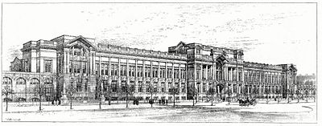

Educational architecture, school architecture or school building design is a discipline which practices architect and others for the design of educational institutions, such as schools and universities, as well as other choices in the educational design of learning experiences. The design of building can significantly influence the learning experience of students. Additionally, because schools are important sources of traffic, employment and community activities, school buildings often act as anchor institutions in neighborhoods or communities. The decline of a school can have significant impact on local communities.
Academy Architecture of Royal College of Science (Imperial College London)